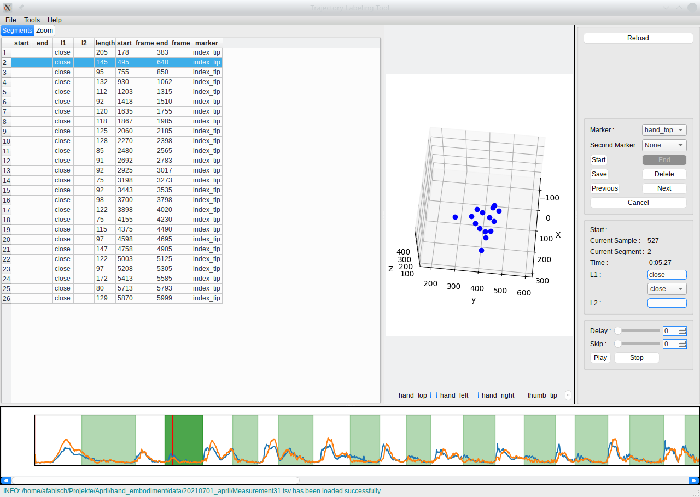

Segmentation of Motion Capture Data¶
Motion capture recordings typically contain a sequence of multiple movements, often multiple demonstrations of the same movement. In order to use individual behavioral building blocks subsequently, these recordings have to be segmented. This can be done manually or automatically.
Automatic Segmentation¶
Automatic segmentation is based on velocity-based multiple changepoint inference (vMCI, Senger et al. (2014)). In order to apply vMCI, the following dependencies have to be installed:
vMCI: https://git.hb.dfki.de/dfki-interaction/vMCI_segmentation
segmentation library: https://git.hb.dfki.de/dfki-interaction/segmentation_library
The script bin/segment_mocap_recording.py can be used to apply vMCI to a
Qualisys motion capture file in TSV format. A corresponding metadata file in
JSON format will be created. Segments are not labeled yet because this has to
be done manually with the same tool with which we can also perform manual
segmentation.
Manual Segmentation and Annotation¶
The trajectory labeling GUI (https://git.hb.dfki.de/dfki-interaction/trajectory_labeling) can be used to segment motion capture data and annotate segments manually. The following image shows the GUI.
{kind=link}
At the bottom, the velocity profiles of index tip and hand top markers are visible. Segments with the label close are marked with green background color. On the left side, there is a list of annotated segments. In the middle we can see a 3D view of markers and on the right side we see the segment and annotation editor.